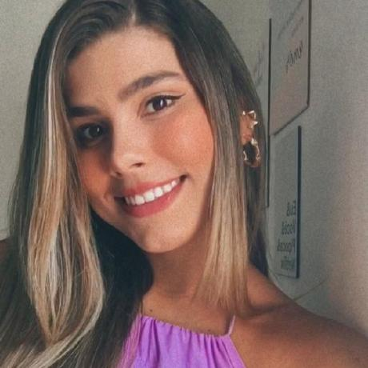

Me chamo Kamila, tenho 27 anos e moro em Paulista - PE. Sou formada em psicologia(2016), porém pouco tempo depois senti que aquilo não estava caminhando como eu planejei, o retorno tanto de satisfação pessoal como financeiro não me preenchiam mais, então decidi parar e tentar algo novo.
Durante uma pandemia, com um conselho de “você seria uma ótima desenvolvedora” de alguém que via esse desejo de mudança inquietante em mim, me vi com um horizonte de possibilidades na minha frente, a tecnologia, essa possibilidade me fez acreditar e os olhos brilharam novamente.
Com bastante sede de aprender comecei no mundo da programação através do Bootcamp da Reprograma, onde aprendi habilidades de soft e hard skills. Agora me formei como dev Fullstack pela Generation, o que foi um divisor de aguas para meu desenvolvimento. 🖥️🖱️
